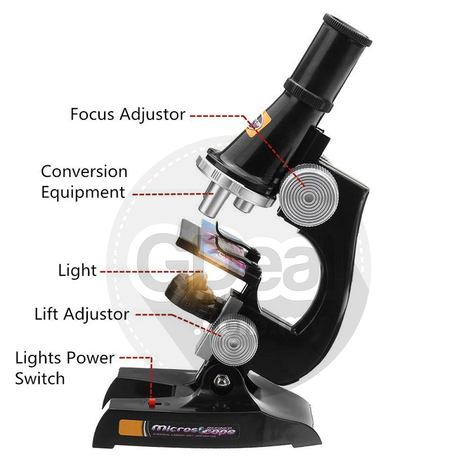

CREATING A WEBSITE
SUB-FIELDS OF BIOLOGY
- Arachnology; the study of spider
- Mycology; the study of insects
- Hypertology; the study of amphibians
- Marine Biology; the study of living organisms in the sea
- Farming; the production of plants and animals
- Botany; the study of plants
- Zoology; the study of animals
- Cardeology; the study of the heart
- Microbiology; the dtudy of microorganisms
- Neuro science
- Dematology; the study of the skin
- Archeology; the study of human history
HOW SCIENCE HAS INFLUENCED OUR LIVES
- Improved agriculture
- Improved health
- Improved education
- Improved transportation
- Improved agriculture

INTRODUCTION TO SCIENCE
the word science is derived from the latin word'scientia'which means knowledge
a knowing, expertness, or experience. science has several definitions including but not limited;